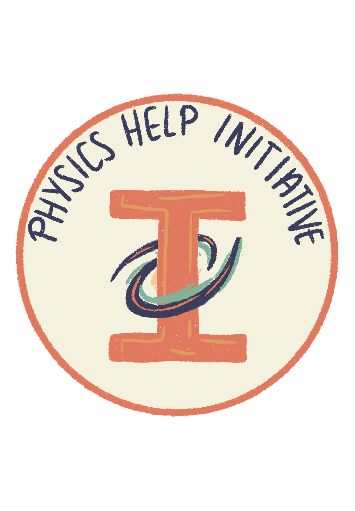
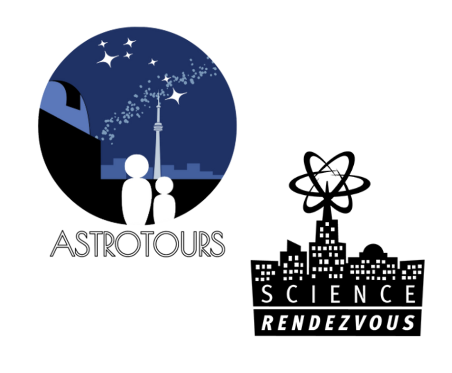

Outreach
Communication is what gives life to curiosity!
Find out more about the outreach initiatives I've been involved in below.
Discover the Universe - À la découverte de l'Univers
Discover the Universe is a Canadian education program with a simple mission: make it easier
(and more fun) to teach astronomy and physics in Canadian classrooms, from kindergarten to grade 12.
We work with and for teachers, providing free, bilingual resources and training that follow the Canadian
curriculum, to help educators with tricky concepts, and inspire their classrooms.
My official title at Discover the Universe is 'Communications and Educations Specialist'.
This means I contribute to creating engaging educational content, supporting outreach
initiatives, and sharing astronomy in a way that sparks curiosity and invites conversation, especially
on social media. My work often bridges scientific accuracy with storytelling, ensuring that complex
concepts remain true to the science while still being inviting and accessible.
Working with Discover the Universe means I get to share the sky with people who will, in turn, share it with countless students, and that ripple effect is one of my favourite parts of the job.
Astronomy Union
 Granted, the Astronomy Union isn’t strictly an outreach initiative, yet it plays a big role in building community
within the undergraduate Astronomy and Astrophysics department at U of T. For the 2025–2026 term, I have the privilege
of serving as VP Events and Social Media, a role that means a lot to me, especially since I only began getting more
involved in the astro community this past year.
Granted, the Astronomy Union isn’t strictly an outreach initiative, yet it plays a big role in building community
within the undergraduate Astronomy and Astrophysics department at U of T. For the 2025–2026 term, I have the privilege
of serving as VP Events and Social Media, a role that means a lot to me, especially since I only began getting more
involved in the astro community this past year.
The AU works to enhance the student experience for everyone enrolled in astronomy courses, whether they’re in the programs
or taking an elective. We serve as a bridge between undergraduate students and the department, making sure student voices
are heard. Through our events, we bring together people from all kinds of backgrounds and get to share with them the welcoming,
vibrant community we have!
Physics Help Initiative
 The Physics Help Initiative (PHI) is a student-run club at U of T dedicated to making physics approachable, exciting, and a little less intimidating. We create a variety of multimedia content aimed at students from late high school through the early years of university. The goal is simple: to share the joy of physics, spark curiosity, and help students see the subject as more than just equations on a page.
As Engagement Director for the 2024–2025 school year, I had the chance to connect with other students, promote our work, and collaborate with the amazing PHI team.
AstroTours, Science Rendez-Vous
 I love taking part in community events that bring astronomy to a wider audience. I’ve volunteered for AstroTours, a monthly event where graduate students at U of T organize tours and seminars. I was also a volunteer at Science Rendezvous 2024, a Canada-wide science festival for children happening every year. I helped mostly with overseeing the Hackathon, and operating some of the science demonstrations for the kids.